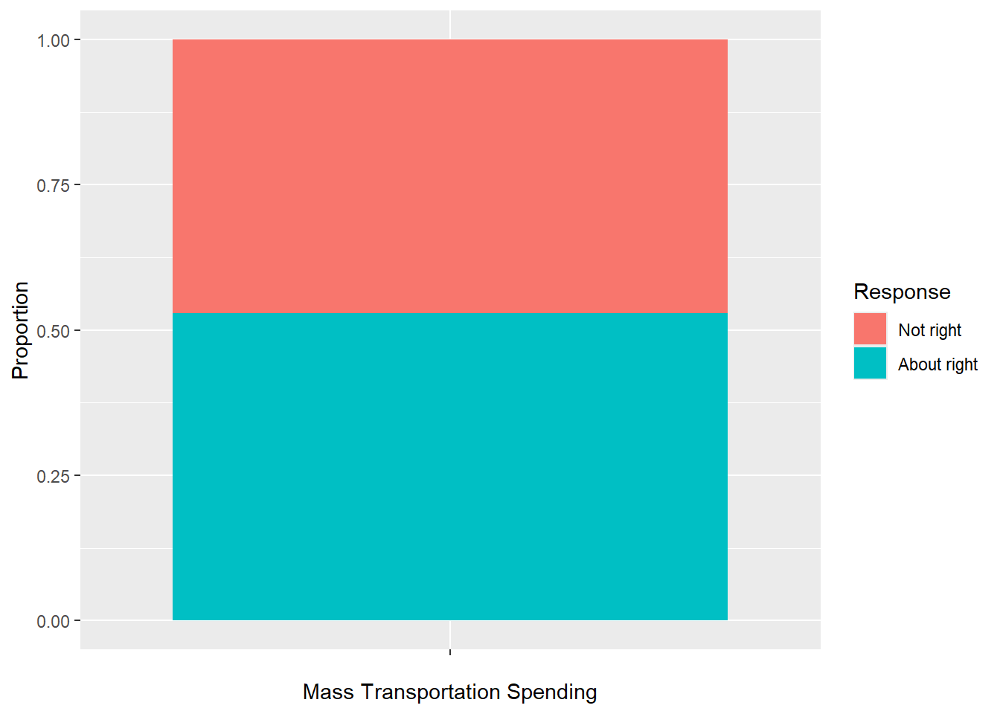
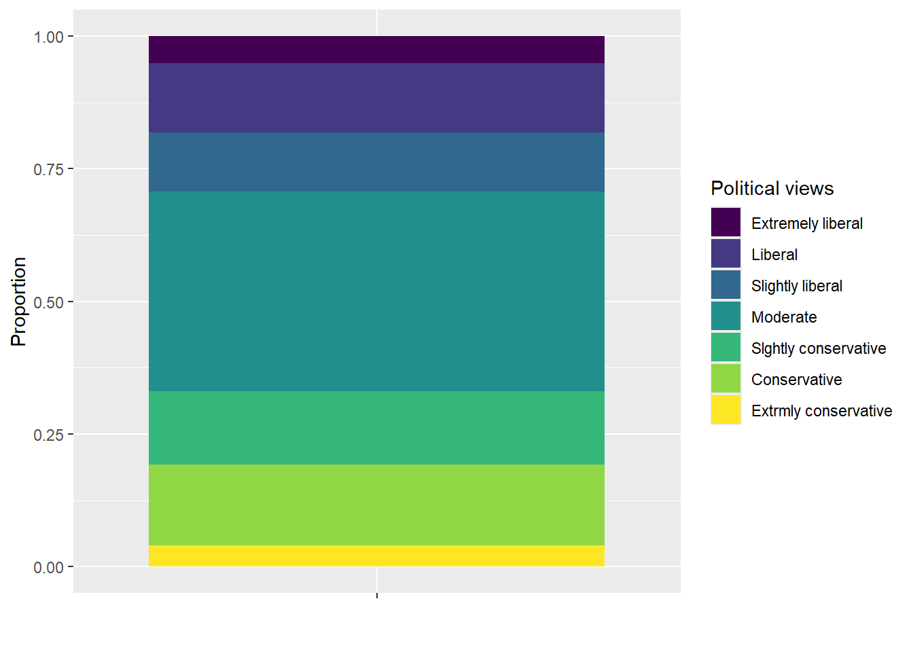
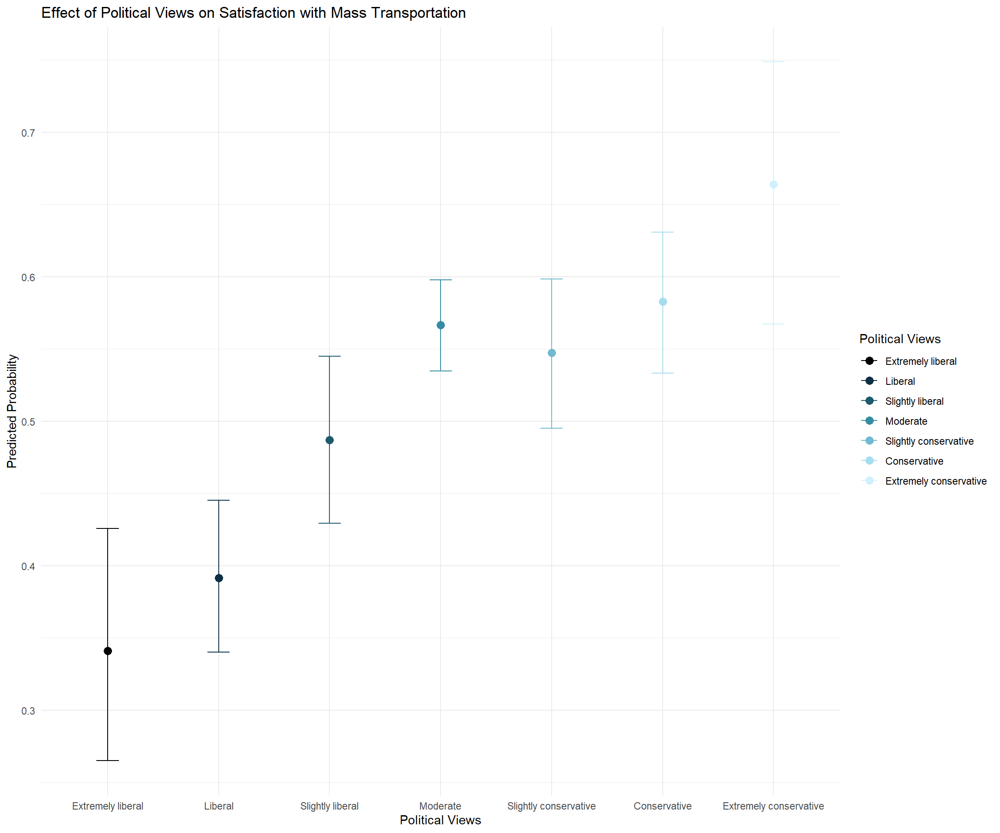
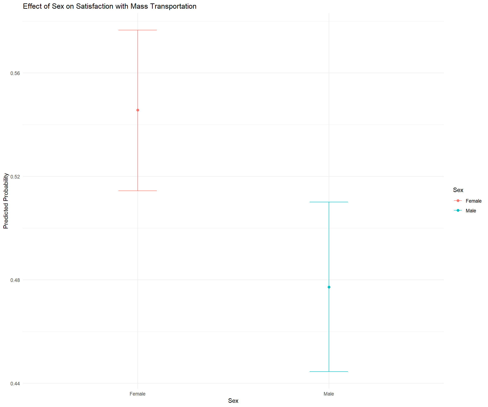
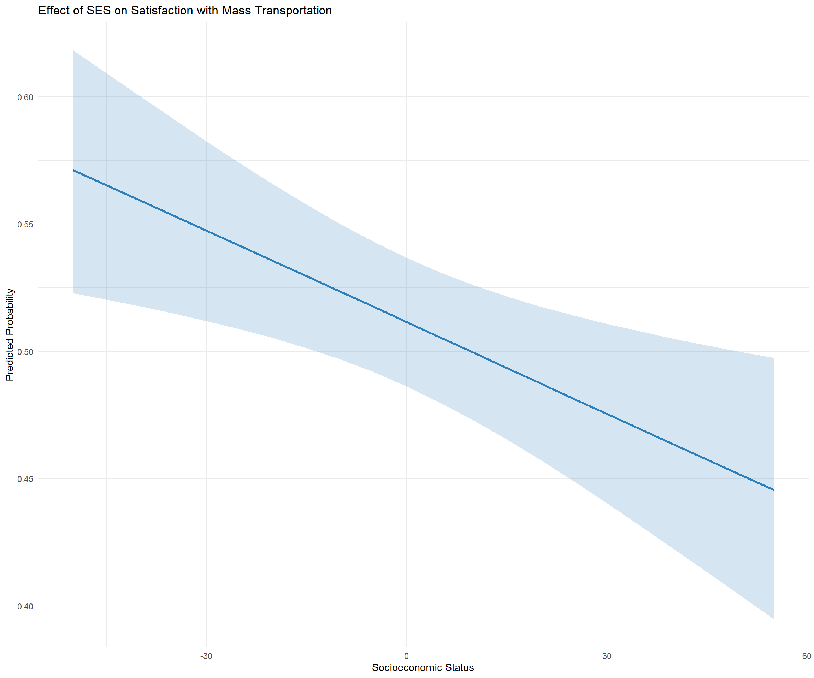
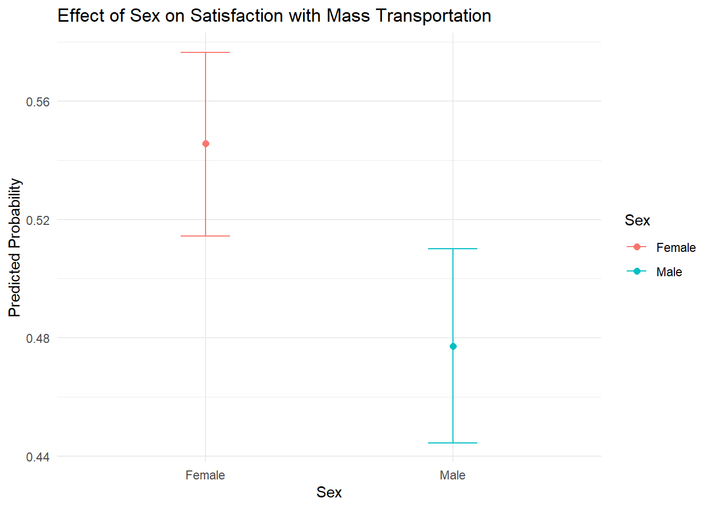
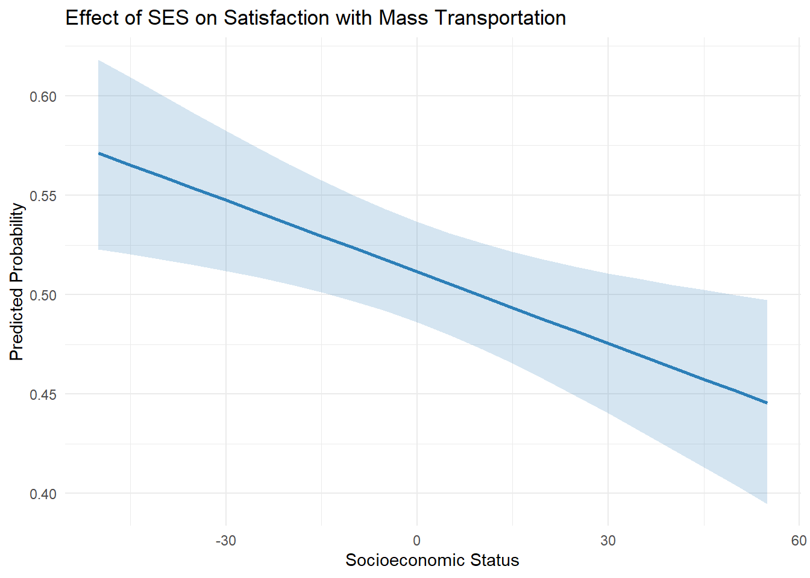
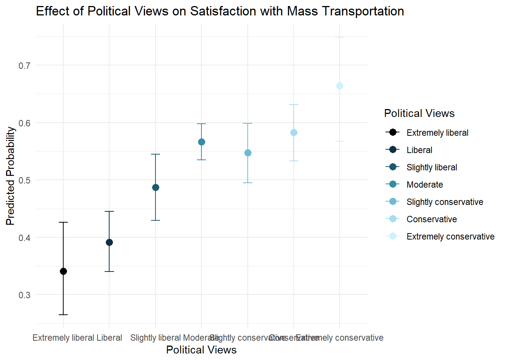

If you are using Github (recommended), make sure to commit and push your work to GitHub regularly, at least after each exercise. Write short and informative commit messages, and share the link to your assignment with me. If not, you can also send me the rmd & rendered file via Canvas.
In this assignment, you will not need to code from scratch. Rather, you’ll need to fill in code where needed. This assignment walks through a logistic regression implementation from EDA to model comparison — useful as a reference for your own future analyses.
I want the assignments to begin reflecting a bit more of how you’d be doing things on your own, where you have some prior knowledge and you figure other things out (by referring to documentation, etc.). In addition to the rendered file, I also want you to submit notes of anything new that you learn while finishing the assignment, and any pain-points — we’ll discuss more.
Make sure that your plots are clearly labeled — all axes, titles, etc.
When computing confidence intervals for odds ratios, always exponentiate the CI endpoints from the log-odds scale. Do not add/subtract SE on the OR scale directly.
Data: General Social Survey
The General Social Survey (GSS) has been used to measure trends in attitudes and behaviors in American society since 1972. In addition to collecting demographic information, the survey includes questions used to gauge attitudes about government spending priorities, confidence in institutions, lifestyle, and many other topics. A full description of the survey may be found here.
The data for this lab are from the 2016 General Social Survey. The original data set contains 2867 observations and 935 variables. We will use and abbreviated data set that includes the following variables:
natmass: Respondent’s answer to the following prompt:
“We are faced with many problems in this country, none of which can be solved easily or inexpensively. I’m going to name some of these problems, and for each one I’d like you to tell me whether you think we’re spending too much money on it, too little money, or about the right amount…are we spending too much, too little, or about the right amount on mass transportation?”
age: Age in years.
sex: Sex recorded as male or female
sei10: Socioeconomic index from 0 to 100
region: Region where interview took place
polviews: Respondent’s answer to the following prompt:
“We hear a lot of talk these days about liberals and conservatives. I’m going to show you a seven-point scale on which the political views that people might hold are arranged from extremely liberal - point 1 - to extremely conservative - point 7. Where would you place yourself on this scale?”
The data are in gss2016.csv in the data folder.
EDA
Let’s begin by making a binary variable for respondents’ views on spending on mass transportation. Create a new variable that is equal to “1” if a respondent said spending on mass transportation is about right and “0” otherwise. Then plot the proportion of the response variable, using informative labels for each category.
natmass age sex sei10 region polviews
1 Too little 47 Male 87.9 New england Moderate
2 Too little 61 Male 38.3 New england Liberal
3 Too much 43 Female 21.8 New england Moderate
4 Too little 55 Female 39.7 New england Slightly liberal
5 About right 53 Female 44.6 New england Slightly liberal
6 Too little 50 Male 80.7 New england Slightly liberal
7 Too much 23 Female 20.1 Middle atlantic Slghtly conservative
8 Too much 71 Male 32.0 Middle atlantic Conservative
9 About right 86 Female 13.2 Middle atlantic Slghtly conservative
10 Too little 32 Male 20.8 Middle atlantic Slightly liberal
11 About right 60 Female 24.2 Middle atlantic Liberal
12 Too much 76 Male 67.7 New england Moderate
13 Too little 33 Female 61.4 New england Moderate
14 About right 56 Male 23.3 New england Conservative
15 Too little 62 Female 25.7 New england Slightly liberal
16 Too little 31 Male 80.9 New england Liberal
17 About right 43 Male 39.2 New england Liberal
18 Too little 58 Female 24.2 New england Liberal
19 About right 32 Female 33.3 Middle atlantic Slghtly conservative
20 About right 23 Female 21.6 Middle atlantic Slightly liberal
21 Too much 37 Female 66.2 Middle atlantic Extrmly conservative
22 About right 25 Female 14.8 Middle atlantic Liberal
23 Too little 71 Male 82.5 Middle atlantic Liberal
24 About right 22 Male 39.9 Middle atlantic Moderate
25 About right 74 Male 82.5 Middle atlantic Moderate
26 Too little 75 Female 37.6 Middle atlantic Conservative
27 About right 32 Male 20.7 Middle atlantic Liberal
28 About right 68 Female 46.7 Middle atlantic Moderate
29 About right 55 Male 65.3 Middle atlantic Slghtly conservative
30 About right 46 Male 65.3 Middle atlantic Slghtly conservative
Fill in the “____” below to encode the binary variable
Code
data <- data %>%mutate(mass_trans_spend_right =if_else(natmass =='About right', 1, 0))head(data, 15)
natmass age sex sei10 region polviews
1 Too little 47 Male 87.9 New england Moderate
2 Too little 61 Male 38.3 New england Liberal
3 Too much 43 Female 21.8 New england Moderate
4 Too little 55 Female 39.7 New england Slightly liberal
5 About right 53 Female 44.6 New england Slightly liberal
6 Too little 50 Male 80.7 New england Slightly liberal
7 Too much 23 Female 20.1 Middle atlantic Slghtly conservative
8 Too much 71 Male 32.0 Middle atlantic Conservative
9 About right 86 Female 13.2 Middle atlantic Slghtly conservative
10 Too little 32 Male 20.8 Middle atlantic Slightly liberal
11 About right 60 Female 24.2 Middle atlantic Liberal
12 Too much 76 Male 67.7 New england Moderate
13 Too little 33 Female 61.4 New england Moderate
14 About right 56 Male 23.3 New england Conservative
15 Too little 62 Female 25.7 New england Slightly liberal
mass_trans_spend_right
1 0
2 0
3 0
4 0
5 1
6 0
7 0
8 0
9 1
10 0
11 1
12 0
13 0
14 1
15 0
Code
#Get proportionsmass_spend_summary <- data %>%count(mass_trans_spend_right) %>%mutate(proportion = n /sum(n))head(mass_spend_summary)
#Look at the dataframe structure. And make sure it's in a format that you can use for plotting.#Change structure if neededmass_spend_long <- mass_spend_summary # I guess it's not needed??#Factorise for plotmass_spend_long$mass_trans_spend_right <-as.factor(mass_spend_long$mass_trans_spend_right)#Make plot#Hint: geom_bar lets you make stacked bar chartsggplot(mass_spend_long, aes(x ="", y = proportion, fill =factor(mass_trans_spend_right))) +geom_bar(stat="identity") +labs(x ="Mass Transportation Spending",y ="Proportion",fill ="Response") +scale_fill_discrete(labels =c("0"="Not right","1"="About right"))

Recode polviews so it is a factor with levels that are in an order that is consistent with question on the survey. Note how the categories are spelled in the data.
Code
data <- data %>%mutate(polviews =factor(polviews,levels =c("Extremely liberal","Liberal","Slightly liberal","Moderate","Slghtly conservative", #"Conservative","Extrmly conservative"), #ordered =TRUE))#head(data, 20)unique(data$polviews)
[1] Moderate Liberal Slightly liberal
[4] Slghtly conservative Conservative Extrmly conservative
[7] Extremely liberal
7 Levels: Extremely liberal < Liberal < Slightly liberal < ... < Extrmly conservative
Make a plot of the distribution of polviews
Code
#Get proportions, format, and produce a plot like you did previously for mass_trans_spend_rightpolviews_summary <- data %>%count(polviews) %>%mutate(proportion = n /sum(n))head(polviews_summary)
polviews n proportion
1 Extremely liberal 133 0.05135135
2 Liberal 336 0.12972973
3 Slightly liberal 290 0.11196911
4 Moderate 974 0.37606178
5 Slghtly conservative 358 0.13822394
6 Conservative 395 0.15250965
ggplot(polviews_summary, aes(x ="", y = proportion, fill = polviews)) +geom_bar(stat ="identity") +labs(x ="",y ="Proportion",fill ="Political views")

Which political view occurs most frequently in this data set?
Moderate
Make a plot displaying the relationship between satisfaction with mass transportation spending and political views. Use the plot to describe the relationship the two variables.
The more conservative one’s political views are the more they think the amount of spending on mass transportation is correct.
We’d like to use age as a quantitative variable in your model; however, it is currently a character data type because some observations are coded as “89 or older”.
Recode age so that is a numeric variable. Note: Before making the variable numeric, you will need to replace the values “89 or older” with a single value.
Code
data <- data %>%mutate(age =if_else(age =="89 or older", "89", age), age =as.numeric(age))summary(data$age)
Min. 1st Qu. Median Mean 3rd Qu. Max.
18.0 34.0 49.0 48.9 62.0 89.0
Interpret the intercept in the context of the data. You can do this by converting the \(\beta_0\) parameter out of the log-odds metric to the probability metric. Make sure to include the 95% confidence intervals. Then interpret the results in a sentence or two–what is the basic thing this probability tells us about?
Code
b0 <-coef(intercept_only_model)[1] # get coefb0_transformed <-plogis(b0) # convert log-odds to probability# Hint: compute CIs on the log-odds scale FIRST, then convert to probabilityci_lower_logodds = b0 -1.96*0.0393685ci_upper_logodds = b0 +1.96*0.0393685# p_lower = exp(ci_lower) / (1 + exp(ci_lower))# p_upper = exp(ci_upper) / (1 + exp(ci_upper))p_lower =plogis(ci_lower_logodds)p_upper =plogis(ci_upper_logodds)b0_transformed
(Intercept)
0.5297297
Code
p_lower
(Intercept)
0.5104727
Code
p_upper
(Intercept)
0.5488986
Interpretation: The model estimates that the probability a randomly selected person reports spending on mass transportation is ‘about right’ is around 53% (95% CI: 0.51, 0.55).
Now let’s fit a model using the demographic factors - age,sex, sei10 - to predict the odds a person is satisfied with spending on mass transportation. Make any necessary adjustments to the variables so the intercept will have a meaningful interpretation. Neatly display the model coefficients (do not display the summary output)
Hint: For the intercept to be meaningful, it should represent the log-odds for a realistic person. What does age = 0 and sei10 = 0 mean? Consider centering continuous predictors.
Code
#make sure that sex is a factordata <- data %>%mutate(sex =factor(sex))#center continuous predictors so the intercept is meaningfuldata <- data %>%mutate(age_c = age -mean(age, na.rm =TRUE),sei10_c = sei10 -mean(sei10, na.rm =TRUE) )#fit with glm()demo_model <-glm( mass_trans_spend_right ~ age_c + sex + sei10_c,data = data,family = binomial)#produce tidy output of model coefficientsdemo_model %>%tidy() %>%kable()
term
estimate
std.error
statistic
p.value
(Intercept)
0.2371084
0.0539555
4.394520
0.0000111
age_c
-0.0061659
0.0022824
-2.701502
0.0069027
sexMale
-0.2557439
0.0798020
-3.204732
0.0013519
sei10_c
-0.0062271
0.0016609
-3.749229
0.0001774
Consider the relationship between sex and one’s opinion about spending on mass transportation. Interpret the coefficient of sex in terms of the log-odds and OR of being satisfied with spending on mass transportation. What are the predicted probabilities for males and females on support for spending on mass transportation? Please include the 95% CIs around each estimate.
# exponentiate the log-odds CIsci_lower_or =exp(ci_lower_lo)ci_upper_or =exp(ci_upper_lo)ci_lower_or
sexMale
0.6622211
Code
ci_upper_or
sexMale
0.9054421
Code
# Get predicted probabilities with emmeansemm_sex <-emmeans(m1, "sex", type ="response")emm_sex
sex prob SE df asymp.LCL asymp.UCL
Female 0.559 0.0133 Inf 0.533 0.585
Male 0.495 0.0147 Inf 0.467 0.524
Confidence level used: 0.95
Intervals are back-transformed from the logit scale
If you did this right, you’ll find that being female (as compared to male) is associated with an increase in the log-odds of being satisfied with spending on mass transportation by 0.2557439 units (95% CI [0.09, 0.41]), holding all other variables constant. This equates to the odds of thinking the spending amount is right in females being 1.29 times the odds of thinking this in men (95% CI [1.13, 1.44]).
The predicted probability for females to be satisfied with spending on mass transportation is 55.9% (95% CI [53.3%, 58.5%]) and that of males is 49.5% (95% CI [46.7%, 52.4%]).
Verify this.
Next, consider the relationship between age and one’s opinion about spending on mass transportation. Interpret the coefficient of age in terms of the log-odds and OR of being satisfied with spending on mass transportation. Please include the 95% CIs around each estimate.
Code
bage <-coef(m1)["age_c"]se_age <-summary(m1)$coefficients["age_c", "Std. Error"] # get SE from modelbage
# OR and OR CIs (remember: exponentiate the log-odds CIs)or_age =exp(bage)ci_lower_or =exp(ci_lower_lo)ci_upper_or =exp(ci_upper_lo)or_age
age_c
0.993853
Code
ci_lower_or
age_c
0.9894169
Code
ci_upper_or
age_c
0.998309
A one unit increase in age is associated with a decrease in the log-odds of being satisfied with spending on mass transportation by 0.006 (95% CI [-0.011, -0.002]), holding all other variables constant. The odds ratio is 0.994 (95% CI [0.990, 0.998]), which confirms the negative relationship implied by the log-odds coefficient. Specifically, for each additional unit of age, the odds of being satisfied with mass transportation spending decrease by a factor of about 0.994, or approximately 0.6% per unit increase in age, holding other factors constant.
Consider the relationship between SES and one’s opinion about spending on mass transportation. Interpret the coefficient of SES in terms of the log-odds and OR of being satisfied with spending on mass transportation. Please include the 95% CIs around each estimate.
Code
bses <-coef(m1)["sei10_c"]se_ses <-summary(m1)$coefficients["sei10_c", "Std. Error"] # get SE for sei10bses
# OR and OR CIsor_ses =exp(bses)ci_lower_or =exp(ci_lower_lo)ci_upper_or =exp(ci_upper_lo)or_ses
sei10_c
0.9937922
Code
ci_lower_or
sei10_c
0.9905623
Code
ci_upper_or
sei10_c
0.9970327
A one unit increase in SES index is associated with a decrease in the log-odds of being satisfied with spending on mass transportation by 0.006 units (95% CI [-0.010, -0.003]), holding all other variables constant. The odds ratio is 0.994 (95% CI [0.991, 0.997]), which confirms the negative relationship implied by the log-odds coefficient. Specifically, for each additional unit of SES index, the odds of being satisfied with mass transportation spending change by a factor of about 0.994, or approximately 0.6% per unit increase in SES index, holding other factors constant.
Marginal effects
Let’s examine the results on the probability scale.
Calculate the marginal effects of sex, age, and SES on mass transportation spending. You can use the margins package function margins discussed in your textbook or you can use the marginaleffects package avg_slopeavg_comparisons discussed in lecture. Interpret each estimate.
The marginal effect of age is -0.0015 (95% CI [-0.0026, 0.0004]). So, for each additional unit increase of age, the probability of being satisfied with mass transportation spending decreases by approximately 0.15 percentage points, holding other factors constant (p = 0.0066).
The marginal effect of SES is -0.0015 (95% CI [-0.0023, -0.0007). For each one-unit increase in the socioeconomic index, the probability of being satisfied with mass transportation spending decreases by approximately 0.15 percentage points, holding other variables constant.
The marginal effect for being female compared to male is -0.0631 (95% CI [-0.1016, -0.0246]). This indicates that females are, on average, about 6.3 percentage points more likely than males to be satisfied with mass transportation spending, holding other factors constant.
Model comparison
Now let’s see whether a person’s political views has a significant impact on their odds of being satisfied with spending on mass transportation, after accounting for the demographic factors.
Conduct a drop-in-deviance/likelihood ratio test to determine if polviews is a significant predictor of attitude towards spending on mass transportation. Name these two models fit2 and fit3, respectively. Compare the two models.
Is the model with polviews better than the model without?
Yes.
Visualization
Let’s plot the results
We next use the model to produce visualizations:
Given the code below, interpret what is being plotted:
pol_plot : The predicted probability of being satisfied with mass transportation spending across political views, holding other factors (age, sex, SES) constant
sex_plot : The predicted probability of being satisfied with mass transportation spending for males and females, holding other factors constant.
ses_plot: The predicted probability of being satisfied with mass transportation spending across SES spectrum, holding other factors constant.
Tip
adjust the various settings in your plot to make it look professional.
You can use ggeffects to get the predicted probabilities for these models.
Code
#install.packages('ggeffects')library(ggeffects)colors <-c("Extremely liberal"="black","Liberal"="#0e2f44", # Dark blue"Slightly liberal"="#1d5a6c", # Less dark blue"Moderate"="#358ca3", # Medium blue"Slghtly conservative"="#71b9d1", # Light blue"Conservative"="#a6dcef", # Lighter blue"Extrmly conservative"="#d0f0fd") # Very light bluecorrect_labels <-c("Extremely liberal"="Extremely liberal","Liberal"="Liberal","Slightly liberal"="Slightly liberal","Moderate"="Moderate","Slghtly conservative"="Slightly conservative","Conservative"="Conservative","Extrmly conservative"="Extremely conservative")pp_pol <-ggemmeans(fit3, terms =c("polviews"))# Adjusted plot with gradient colorspol_plot <-ggplot(pp_pol, aes(x = x, y = predicted, color = x)) +geom_point(size =3) +geom_errorbar(aes(ymin = conf.low, ymax = conf.high), width =0.2) +scale_color_manual(values = colors, labels = correct_labels) +scale_x_discrete(labels = correct_labels) +labs(title ="Effect of Political Views on Satisfaction with Mass Transportation",x ="Political Views", y ="Predicted Probability",color ="Political Views") +theme_minimal()pol_plot

Code
labs(title ="Effect of Political Views on Satisfaction with Mass Transportation",x ="Political Views", y ="Predicted Probability",color ="Political Views") +theme_minimal()
NULL
Code
pol_plot
Code
pp_sex <-ggemmeans(fit3, terms =c("sex"))sex_plot <-ggplot(pp_sex, aes(x = x, y = predicted, color = x)) +geom_point(size =2) +geom_errorbar(aes(ymin = conf.low, ymax = conf.high), width =0.2) +labs(title ="Effect of Sex on Satisfaction with Mass Transportation",x ="Sex", y ="Predicted Probability",color ="Sex") +theme_minimal()sex_plot

Code
pp_ses <-ggemmeans(fit3, terms ="sei10_c")ses_plot <-ggplot(pp_ses, aes(x = x, y = predicted)) +geom_line(color ="#2c7fb8", size =1) +geom_ribbon(aes(ymin = conf.low, ymax = conf.high), fill ="#2c7fb8", alpha =0.2) +# Add a confidence interval bandlabs(title ="Effect of SES on Satisfaction with Mass Transportation",x ="Socioeconomic Status", y ="Predicted Probability") +theme_minimal() +theme(legend.position ="none") ses_plot

Model Assumptions
Is the logistic model a good choice for this data?
Code
binned_residuals(fit2)
Warning: About 86% of the residuals are inside the error bounds (~95% or higher would be good).
Note
Answer: The model isn’t perfectly capturing the relationship. So I guess.. no?
Model fit
Calculate the \(R^2\) for this model
Code
r2_mcfadden(fit2)
# R2 for Generalized Linear Regression
R2: 0.010
adj. R2: 0.009
R2 interpretation: The model’s R2 value (0.010) is quite small.
Next, Take a look at the binned residual plots for each continuous predictor variable and look at linearity. Is there a predictor that sticks out? What can we do to improve model fit in this case?
Code
binned_residuals(fit2, term="sei10_c")
Warning: About 88% of the residuals are inside the error bounds (~95% or higher would be good).
Code
binned_residuals(fit2, term="age_c")
Ok: About 98% of the residuals are inside the error bounds.
The relationship between SES and the log-odds of mass transportation satisfaction may not be linear. We might want to try different curves for this factor.
Improving Model Fit
Based on your binned residual plots above, one predictor may show signs of nonlinearity. Try adding a squared term for that predictor, refit the model, and compare using a likelihood ratio test. Do the binned residuals improve?
contrast estimate SE df z.ratio
Extremely liberal - Moderate -0.9266262 0.1950664 Inf -4.750
Extremely liberal - Slghtly conservative -0.8487137 0.2127293 Inf -3.990
Extremely liberal - Conservative -0.9935486 0.2108369 Inf -4.712
Extremely liberal - Extrmly conservative -1.3402621 0.2792876 Inf -4.799
Liberal - Moderate -0.7090022 0.1308520 Inf -5.418
Liberal - Slghtly conservative -0.6310897 0.1555805 Inf -4.056
Liberal - Conservative -0.7759246 0.1532081 Inf -5.065
Liberal - Extrmly conservative -1.1226380 0.2392048 Inf -4.693
Slightly liberal - Extrmly conservative -0.7334002 0.2412625 Inf -3.040
p.value
<.0001
0.0013
0.0001
<.0001
<.0001
0.0010
<.0001
0.0001
0.0382
Results are averaged over the levels of: sex
Results are given on the log odds ratio (not the response) scale.
P value adjustment: tukey method for comparing a family of 7 estimates
contrast odds.ratio SE df null
Extremely liberal / Moderate 0.3958871 0.07722426 Inf 1
Extremely liberal / Slghtly conservative 0.4279651 0.09104070 Inf 1
Extremely liberal / Conservative 0.3702605 0.07806458 Inf 1
Extremely liberal / Extrmly conservative 0.2617771 0.07311109 Inf 1
Liberal / Moderate 0.4921350 0.06439684 Inf 1
Liberal / Slghtly conservative 0.5320118 0.08277063 Inf 1
Liberal / Conservative 0.4602780 0.07051835 Inf 1
Liberal / Extrmly conservative 0.3254202 0.07784206 Inf 1
Slightly liberal / Extrmly conservative 0.4802732 0.11587191 Inf 1
z.ratio p.value
-4.750 <.0001
-3.990 0.0013
-4.712 0.0001
-4.799 <.0001
-5.418 <.0001
-4.056 0.0010
-5.065 <.0001
-4.693 0.0001
-3.040 0.0382
Results are averaged over the levels of: sex
P value adjustment: tukey method for comparing a family of 7 estimates
Tests are performed on the log odds ratio scale
Using the pairwise comparisons above, fill in the blanks. Be specific: are these odds ratios or probability differences? The type="response" output gives odds ratios for logistic models.
Conservatives have 2.70, 2.17 times the odds of supporting mass transit spending compared to extremely liberal and liberal respondents
Extreme liberals have 0.37, 0.40, 0.43 times the odds of supporting spending compared to conservatives, moderates, and slightly conservative respondents
Extremely conservative respondents have 3.08, 2.08 times the odds of supporting mass spending compared to liberals and slightly liberal respondents
Liberals have 0.49, 0.53 times the odds of supporting spending compared to moderates and slightly conservative respondents
Conclusion
___ based on the model summary below, and the three figures.
Df
Deviance
Resid. Df
Resid. Dev
Pr(>Chi)
NULL
NA
NA
2589
3581.340
NA
age_c
1
9.268443
2588
3572.072
0.0023314
sex
1
12.156624
2587
3559.915
0.0004891
sei10_c
1
14.119078
2586
3545.796
0.0001716
polviews
6
63.028441
2580
3482.768
0.0000000
Table 1

Figure 1: Effect of Sex on Satisfaction with Mass Transportation

Figure 2: Effect of SES on Satisfaction with Mass Transportation

Figure 3: Effect of Political Views on Satisfaction with Mass Transportation